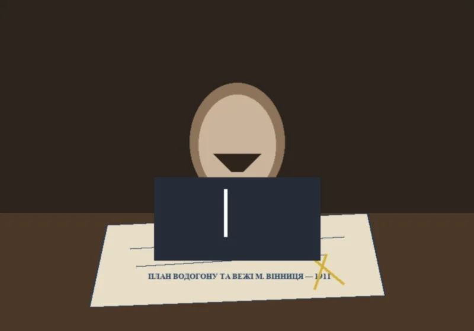

Життєвий та творчий шлях
Від випускника Інституту цивільних інженерів до творця архітектурного обличчя Поділля
Походження та освіта (1860–1889)
Григорій Григорович Артинов народився у 1860 році в місті Ніжині на Чернігівщині. Походив із родини військовослужбовця. Отримав блискучу інженерну та художню освіту: спочатку закінчив Кронштадтське реальне училище, а в 1889 році — престижний Санкт-Петербурзький інститут цивільних інженерів (ІЦІ). Під час навчання опанував передові європейські технології будівництва з каменю, цегли, чавуну та бетону.
Прибуття до Вінниці та посада зодчого (1900)
У вересні 1900 року міська дума Вінниці на чолі з прогресивним міським головою Миколою Оводовим ухвалила історичне рішення — заснувати штатну посаду міського архітектора. На цю посаду було запрошено досвідченого інженера Григорія Артинова. Між архітектором та мером склався унікальний творчий тандем, який за 15 років перетворив місто на передовий подільський центр.
Служіння громаді та останні роки (1914–1919)
Артинов опікувався не лише естетикою фасадів, а й життєзабезпеченням міста: проєктував міський водогін, трамвайні колії, електростанцію, берегоукріплення річки Буг. У важкі роки Першої світової війни та визвольних змагань залишався у Вінниці. Помер 9 грудня 1919 року від висипного тифу під час виконання службових обов'язків. Похований біля Воскресенської церкви.

Григорій Артинов у робочому кабінеті
Колоризоване історичне зображення: архітектор за креслярським столом під час опрацювання генерального плану водогону та міської вежі (1911 р.). На столі — латунні циркулі, рейсшини та проєктні плани міста.